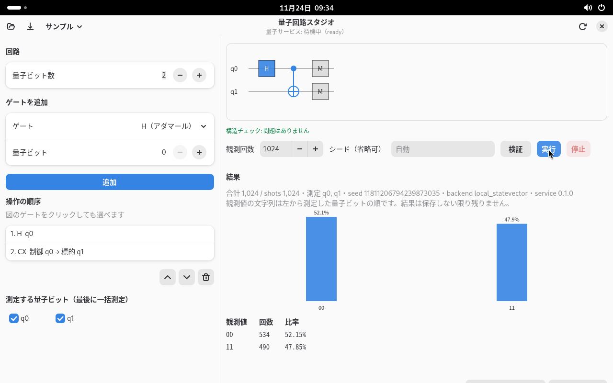
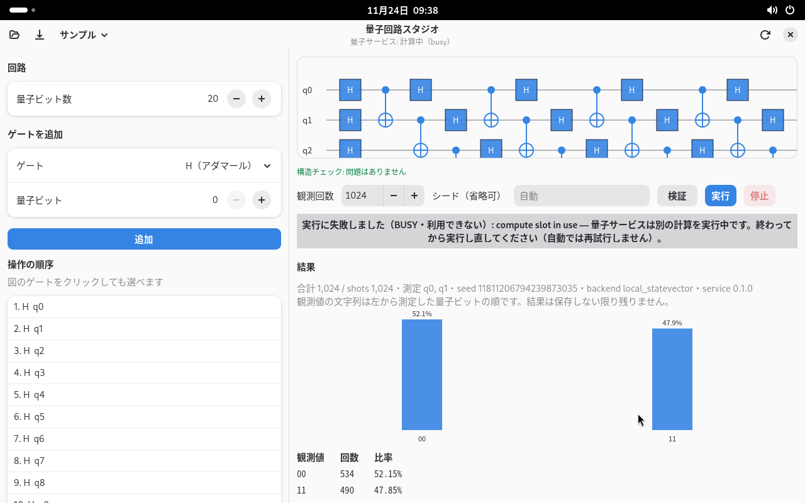
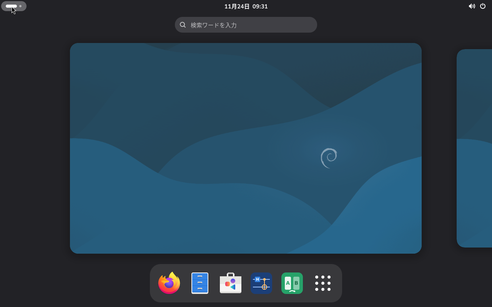
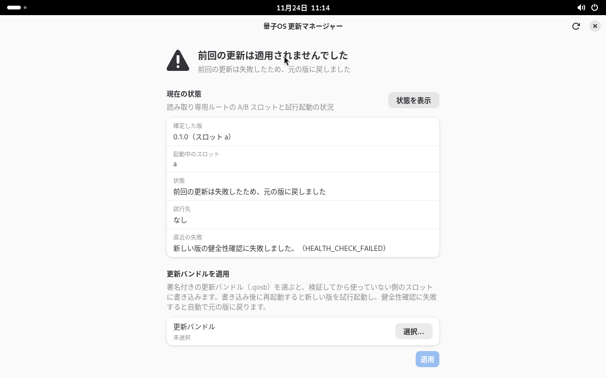
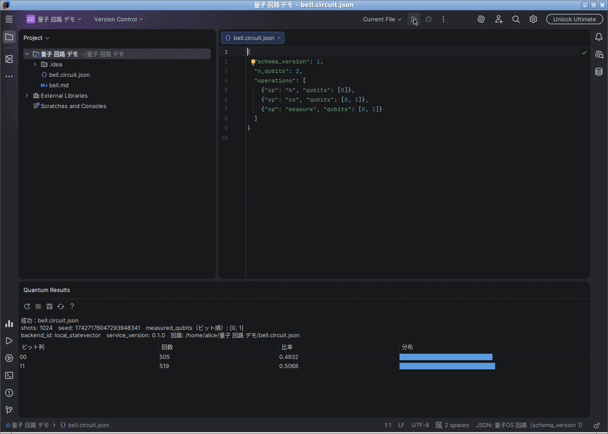
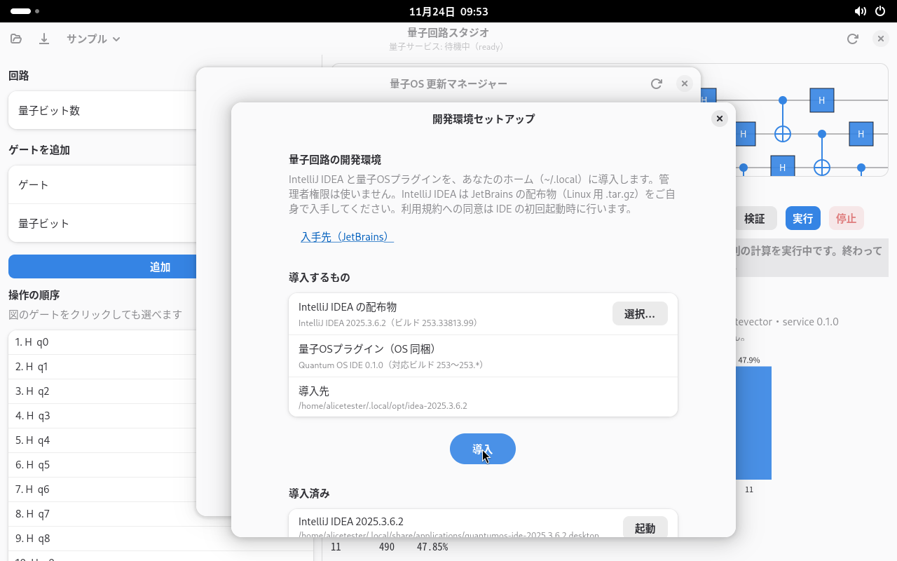

QUANTUM SERVICE
ローカル量子サービス
状態ベクトル方式のシミュレーターを OS のサービス（qosd）として常備。ソケット起動で必要なときだけ立ち上がり、最大 20 量子ビットの回路を手元で実行します。
h / x / z / rx / rz / cx終端測定systemd ソケット起動
量子OSは、量子回路のローカル実行を標準搭載した Linux ベースの OS です。 OS に組み込まれた量子サービスが回路を検証・実行し、標準 CLI・GUI アプリ・IDE プラグインから同じ手順で使えます。 読み取り専用ルートと署名付き A/B 更新で、更新に失敗しても自動で元の版に戻ります。
01・10 は観測されない ── 2 つの量子ビットがもつれている証拠です。
Features
クラウドの順番待ちも、ライブラリーの環境構築もいりません。量子サービス・CLI・アプリ・保守ツールまでを、ひとつの OS として設計しました。
QUANTUM SERVICE
状態ベクトル方式のシミュレーターを OS のサービス（qosd）として常備。ソケット起動で必要なときだけ立ち上がり、最大 20 量子ビットの回路を手元で実行します。
REPRODUCIBLE
すべての実行結果にシード（64 ビット）を添えて返します。同じ回路・同じシードなら同じ観測回数。授業の配布資料や論文の再現実験にそのまま使えます。
STANDARD CLI
qosctlvalidate・run・status の 3 コマンド。成功は 1 行の JSON、失敗は終了値 2／3／4 とエラー JSON で返すので、スクリプトや CI から扱いやすい設計です。
IMMUTABLE OS
OS 本体は読み取り専用。利用者データと設定は状態領域（/var）と /etc オーバーレイに分離し、OS の更新や切り戻しで消えません。
SAFE UPDATE
Ed25519 署名を検証してから使っていない側のスロットに書き込み、再起動で試行。健全性確認に失敗すれば、次の起動で自動的に元の版へ戻ります。
PRIVACY
量子サービスは IP で待ち受けず、Unix ソケットだけで動作。quantum グループの利用者だけが使え、回路・結果・シードを自動で保存・送信しません。
DESKTOP APP
ゲートを選んで並べるだけで回路を作成。回路図、サービスと同じ規則の構造チェック、実行・停止、ヒストグラムと表、同じシードでの再実行まで GUI で完結します。
GUI MAINTENANCE
A/B スロット・試行起動・切り戻しの状態と理由を日本語で表示。更新の適用は毎回管理者認証（polkit）を求め、他の版向けのバンドルは拒否します。
IDE
回路 JSON の補完・構造チェック、実行構成からの実行と停止、結果ビュー、サンプル取り込み。デスクトップ版のセットアップツールなら、IDE への導入も数クリックです。
Editions
量子サービス・CLI・更新の仕組みは共通です。サーバーや組み込み用途には標準版を、学習・研究・開発の日常使いにはデスクトップ版を。
GUI を持たない最小構成。量子計算ノードや検証用の専用マシンに。
qosd と標準 CLI qosctlqos-admin（更新・状態確認・診断）GNOME 48 を搭載した日常使いのデスクトップ。量子計算のアプリを最初から。
| 項目 | 標準版 | デスクトップ版 |
|---|---|---|
| 基盤 | Debian 13（trixie）、x86_64、UEFI（systemd-boot） | |
| 画面 | コンソール（tty・シリアル） | GNOME 48（Wayland）、GDM |
| 量子サービス | qosd（最大 20 量子ビット、1〜100,000 ショット、実行期限 120 秒） | |
| 更新バンドルの製品 ID | quantumos | quantumos-desktop（他の版のバンドルは適用不可） |
| 健全性確認 | ルート・状態領域・コンソール・量子サービス（6 項目） | ルート・状態領域・表示マネージャー・量子サービス（6 項目） |
| アプリの追加 | — | Flatpak（状態領域に導入。OS の更新・切り戻しの影響を受けない） |
How It Works
量子回路スタジオも IDE プラグインも、内部では標準 CLI qosctl を呼び出します。どこから実行しても、検証規則とエラーの意味は同じです。
回路 JSON（版 1）で記述。スタジオならゲートを選んで並べるだけ。IDE では補完と構造チェックが働きます。
qosctl validate でサービスと同じ規則で確認。量子ビット数・ゲート・測定位置の誤りを具体的に指摘します。
qosctl run で観測回数を取得。計算中の別要求は BUSY で即座に返し、実行中の停止にも対応します。
結果のシードを渡して再実行すれば同じ観測回数。結果は利用者が保存したときだけファイルに残ります。
更新マネージャー（または qos-admin update）からの更新は、次の順で進みます。評価では、健全性確認に失敗した版が自動で切り戻されることも確認しています。
Architecture
qosctlvalidate / run / statusqos-adminupdate / update-status / health-checkqosd ＋ 計算ワーカーUnix ソケット・版付き JSON・状態ベクトル計算・メモリ／時間の上限/var 状態領域・/etc オーバーレイScreens
デスクトップ版 v0.1 を仮想マシンで評価したときの画面です（ソフトウェアエミュレーション、ネットワークなし）。






For Developers
回路は 1 つの JSON オブジェクト。qosctl は成功時に結果を 1 行の JSON で返し、失敗は終了値で分類されます。どの言語からでも子プロセスとして呼び出せます。
使える操作は h・x・z・rx・rz（角度はラジアン）・cx と、最後に 1 回の measure。
{"schema_version": 1,
"n_qubits": 3,
"operations": [
{"op": "h", "qubits": [0]},
{"op": "cx", "qubits": [0, 1]},
{"op": "cx", "qubits": [1, 2]},
{"op": "rz", "qubits": [2], "theta": 1.5707963},
{"op": "measure", "qubits": [0, 1, 2]}]}
エラーは標準エラーに {"code", "message"} の 1 行。終了値で対処を分けられます。
# 検証・実行・状態 qosctl validate ghz.json qosctl run ghz.json --shots 4096 --seed 42 qosctl status # {"state":"ready"} # 終了値 0 成功（結果 JSON を標準出力に 1 行） 2 入力の誤り CIRCUIT_INVALID, BACKEND_LIMIT … 3 利用できない ACCESS_DENIED, BUSY, SERVICE_UNAVAILABLE 4 実行の失敗 TIMEOUT, EXECUTION_FAILED …
Get Started
OS イメージの作成スクリプト、量子サービス、デスクトップアプリ、IDE プラグイン、設計書と評価記録まで、すべて TechnologyFrontier の GitHub から入手できます。
量子OS 本体。量子サービス・CLI・保守ツール・デスクトップアプリ・OS イメージの作成スクリプト・設計書（QOS-BD／FD／IF／DT）。
# 取得と試験 git clone https://github.com/TechnologyFrontier/QuantumLinuxOS.git cd QuantumLinuxOS python3 -m pytest # デスクトップ版イメージ（root・debootstrap が必要） ./bin/qos-bundle keygen update.key update.pub sudo QOS_EDITION=desktop QOS_UPDATE_PUBKEY=update.pub \ QOS_ROOT_PASSWORD_HASH="$(openssl passwd -6)" \ image/build-rootfs.sh out-desktop sudo QOS_EDITION=desktop image/make-disk.sh \ out-desktop quantumos-desktop.raw
IntelliJ IDEA 2025.3（ビルド 253）向けの量子OS 開発 IDE プラグイン。設計書（QIDE-BD／FD）と GUI 評価記録付き。
# プラグイン ZIP のビルド（JDK 21） git clone https://github.com/TechnologyFrontier/Quantum_for_IntelliJ_plugin.git cd Quantum_for_IntelliJ_plugin ./gradlew buildPlugin # → build/distributions/quantum-os-ide-plugin-0.1.0.zip # デスクトップ版イメージに同梱する場合 sudo QOS_EDITION=desktop \ QOS_IDE_PLUGIN_ZIP=quantum-os-ide-plugin-0.1.0.zip … \ image/build-rootfs.sh out-desktop
| 動作環境（v0.1） | 内容 |
|---|---|
| アーキテクチャー | x86_64、UEFI（Secure Boot は v0.1 では未対応） |
| ディスク | 標準版 32 GiB 以上、デスクトップ版 64 GiB 以上（専用ディスク） |
| メモリー | 評価環境 8 GiB（デスクトップ版） |
| 量子計算の上限 | 実行は 20 量子ビットまで（回路の構造は 64 量子ビット・10,000 操作・4 MiB まで）、1〜100,000 ショット、実行期限 120 秒 |
| IDE | IntelliJ IDEA 2025.3（ビルド 253.*）。IDE 本体は OS に同梱していません。JetBrains から入手し、利用規約に同意のうえご利用ください |
| イメージの作成 | Linux（root 権限）、debootstrap、Debian ミラーへの接続 |
Contact
ソースコードはどなたでも GitHub から入手できます。教育・研究機関での導入、専用ハードウェアへの搭載、カスタマイズのご相談も承ります。
📌 本ページは量子OS v0.1 の紹介を目的としています。掲載の機能・数値は v0.1 のソースコードと評価記録（2026年11月24日時点）に基づきます。v0.1 は初版であり、設計書はレビュー前の版です。量子計算は状態ベクトル方式のシミュレーターで行い、量子コンピューター実機には接続しません。